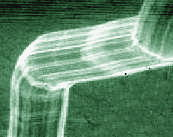
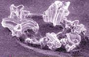

Tin Whiskers
The term
'Tin Whiskers' refers
to 'needle-like' crystalline structures of tin (Sn) that form and grow on
surfaces that use pure or nearly-pure tin as final finish. Tin whiskers
commonly (but not exclusively) appear as thin strands of tin, and can
indeed look like whiskers, hence its name. Other metals such as
zinc, cadmium, indium, and antimony also exhibit this whisker-growing
phenomenon.
Tin whiskers have been
observed to grow to several millimeters in length, with records showing
them attaining lengths of up to 10 mm in rare instances. Whisker
diameters, on the other hand, can go up to as high as 10 microns.
Tin
whiskers are highly undesirable in the external pins or leads of
semiconductor devices, since they can bridge two adjacent leads together
and form an electrical short. The short will be transient if the
resulting current flow is enough to 'fuse' open the whisker.
Otherwise, the short will be stable and can result in real device
failures.
The problem of tin whiskers
is not a new phenomenon, having been documented as early as the 1940's.
Its resurgence as a critical issue in the semiconductor industry,
however, was heightened by recent efforts of the industry to move away
from the use of lead (Pb) in its manufacturing processes. Early
explorations revealed pure or nearly-pure tin systems to be viable
alternative Pb-free lead finish materials. Their disadvantage, of
course, is their tendency to exhibit tin whiskers.
Not all tin
whiskers look like whiskers, and even those that do also vary in form -
they can be straight, kinked, hooked, or forked. Those that do not
look like whiskers at all can appear as nodules or in pyramidal
structure. A word of caution though - many people confuse tin
whiskers with a more commonly-encountered attribute, i.e., dendrites, so
novice engineers must be trained to distinguish between the two.
|
|
|
Figure 1.
Photo of a straight filament whisker;
source:
http://nepp.nasa.gov
|
Dendrites
exhibit fern-like or snowflake-like patterns that propagate along the
surface, whereas whiskers protrude out of the surface. Dendritic
formation involves the dissolution of the metal atoms in moisture and
their redistribution on the surface under the influence of an electric
field, such as when the device is biased.
The amount of
time needed for whiskers to grow varies as well from just a few days to
a few years, with reported growth rates ranging from 0.03 mm to 0.9 mm
per year. This is one reason why whiskers are a major reliability
concern - they can not be screened out at t=0 and can appear when least
expected.
There is
still a lack of thorough understanding as to why whiskers form and grow.
In fact, many independent studies on the whisker phenomenon have yielded
contradictory results, underscoring the fact that whisker formation
mechanisms are complex phenomena.
A common and
widely-held explanation for the formation of whiskers states that the
phenomenon is a stress-relief mechanism. According to this theory,
the tin layer or deposit becomes subject to internal residual stresses
once the tin plating process is completed.
These
residual stresses
are reduced
by whisker formation. The origin of these internal stresses is discussed
in the next paragraphs.
As soon as Sn is deposited over the copper leadframe, an oxide layer
starts to form over the deposited Sn layer. At the same time, Cu atoms
from the substrate start to diffuse into the Sn layer, forming Sn-Cu
intermetallics. Since the oxide layer over the Sn coating impedes
outward movement of the Sn atoms, this process of Sn-Cu intermetallic
formation builds up internal compressive stresses within the Sn layer as
more Cu atoms diffuse into the same volume of the Sn coating.
Eventually the stress becomes too large that excess Sn material begins
to extrude at the weakest points of the oxide layer. This protrusion
originates as an Sn nodule over the oxide, which eventually grows into
an Sn filament or 'whisker', as it is more commonly referred to.


Figure 2.
Photo of a 'bend' whisker (left) and a 'nodule' whisker (right);
source:
http://nepp.nasa.gov
This process has been known to be driven by the following factors: 1)
application of internal and external (compressive) stresses, e.g.,
trimming and forming of the leads ; 2) thickness of the
coating; 3) structure of the crystal; 4) substrate used; 5) temperature;
and 6) humidity. Thus, the presence of contaminants does not directly
induce the formation of whiskers, unless it results in a change to any
of the factors above.
The risks
posed by whisker formation generally fall under four categories: 1)
stable short circuits in low-current circuits (low voltage, high
impedance); 2) transient short circuits; 3) metal vapor arcing, wherein
the whisker is turned into a highly-conductive plasma for several
seconds (if the conditions for sustaining the metal vapor arc are met),
consuming adjacent materials as it conducts hundreds of amperes; and 4)
debris or contamination.
Tin whisker
formation may be avoided by not using pure tin in the lead finish
process. Adding about 3% of Pb by weight to Sn greatly reduces the
occurrence of whiskers, while using 5% Pb virtually eliminates it.
Then again, the industry is moving away from the use of Pb, so other Pb-free
lead finish alternatives must be explored. Please see the article
"A Pb-free Semiconductor
Industry" for more on this.
The industry
has yet to come up with a single standard for acceptance testing of lots
in relation to whisker formation. Recently, however, the National
Electronics Manufacturing Initiative (NEMI) has offered the electronics
industry a revised set of proposed recommendations for
"tin whisker acceptance test requirements and acceptance criteria for
evaluating devices with tin finishes."
The revised acceptance test requirements have already been submitted to both IPC and JEDEC
for approval and subsequent release as a formal standard or guideline
for tin whisker acceptance testing for the industry.
See
also:
Lead Finish; Pb-free
Manufacturing
HOME
Copyright
© 2004
www.EESemi.com.
All Rights Reserved.